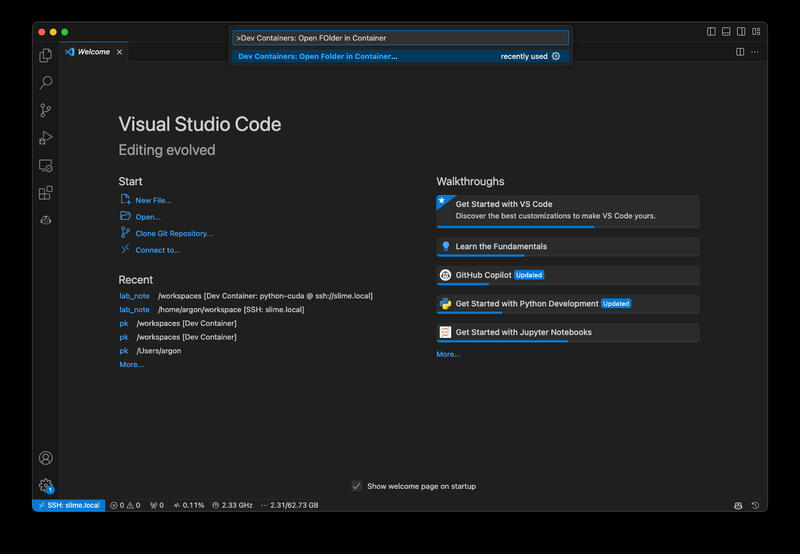
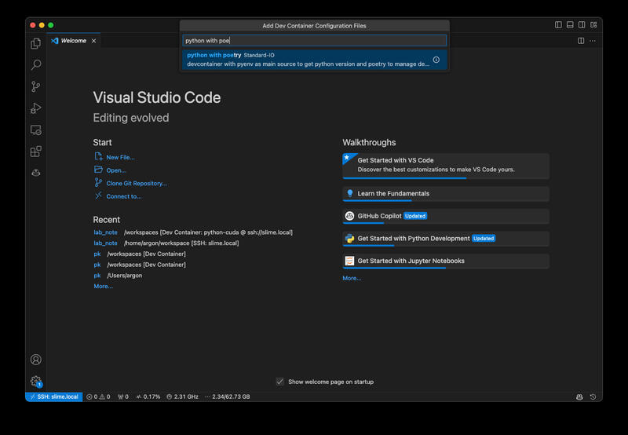
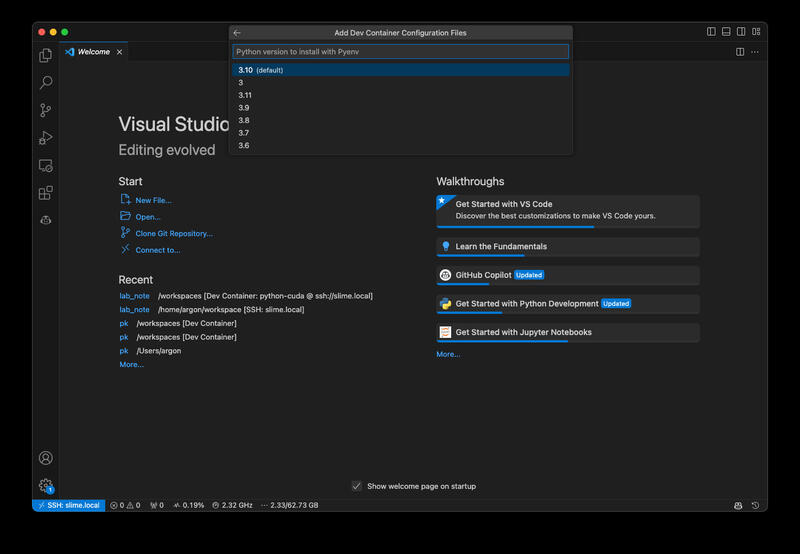
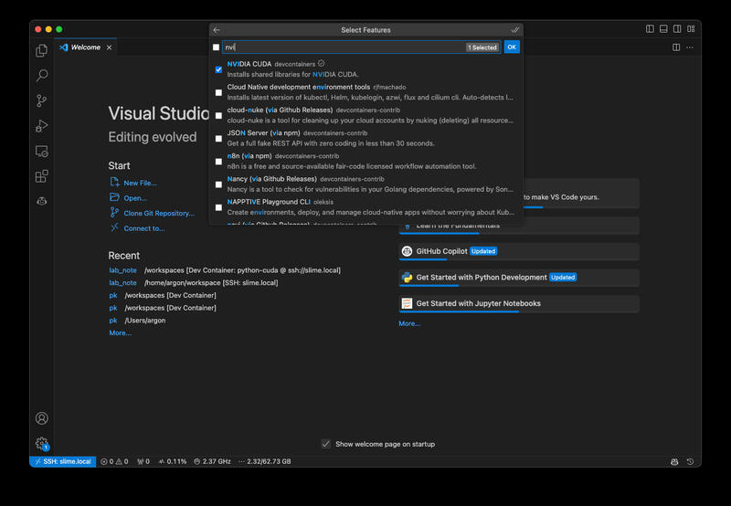
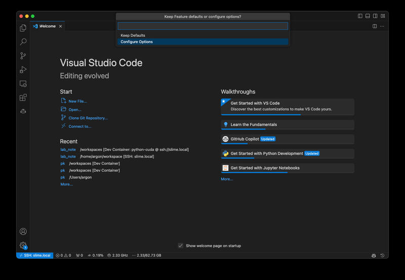
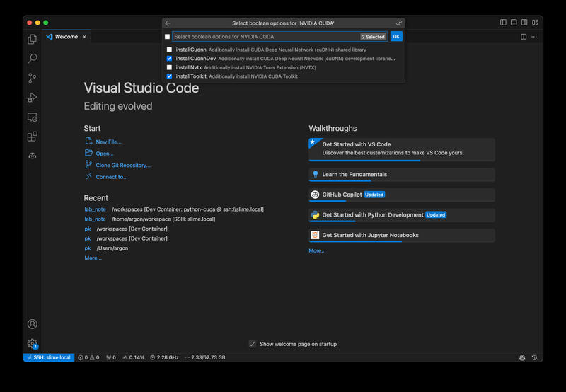
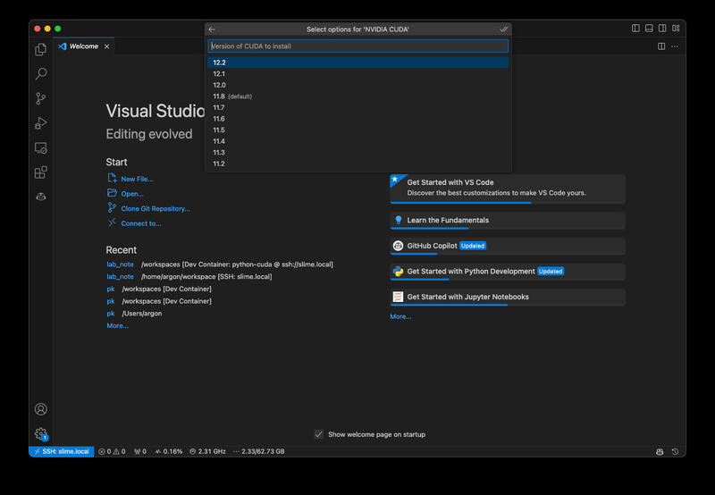
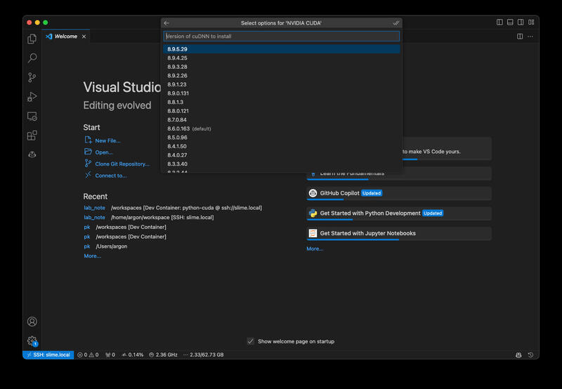
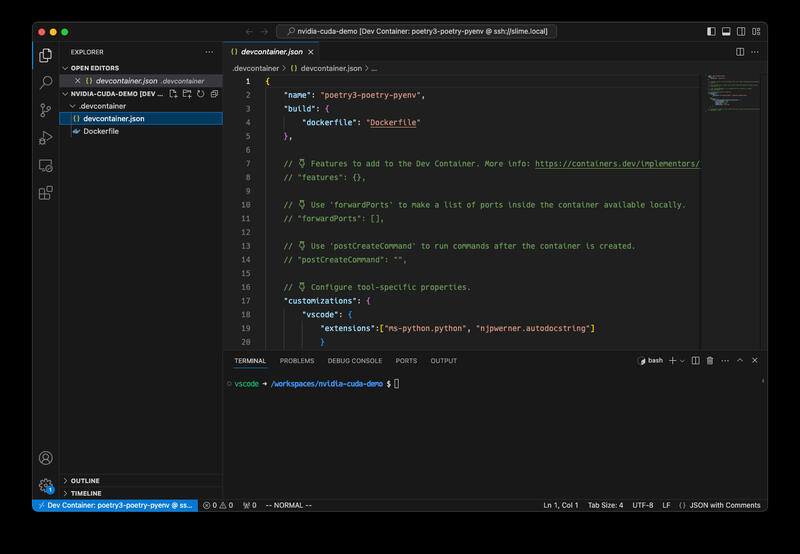

devcontainersでCUDA環境を整える
はじめに
devcontainersのFeaturesを使用していい感じにCUDA開発環境を整えることができたので、そのメモです。
やったこと
- CUDA開発環境を一式導入する
devcontainer.jsonを作成 - Visual Studio CodeでPython + Poetry + CUDAな環境を手軽に作成
devcontainer.jsonを用いたCUDA開発環境の設定
devcontainersのFeaturesを利用すると、事前に準備されている各種機能を手軽に開発用コンテナに導入することができます。ここでは、 ghcr.io/devcontainers/features/nvidia-cuda を使用して、CUDAを開発用コンテナに導入します。
今回作成したdevcontainer.jsonを以下に示します。以下の設定では、PythonのベースイメージにCUDA開発環境を導入しています。この際、cuDNNの開発環境とCUDA Toolkitを追加で導入しています。
また、CUDAのバージョンは12.2を、cuDNNのバージョンは8.9.5.29をそれぞれ指定しています。runArgsにはコンテナ内部からGPUを使用するため、--gpus allオプションを指定しています。remoteEnvにはnvccを実行するためのパスを追加しています。
{
"name": "python3",
"image": "mcr.microsoft.com/devcontainers/python:3.10",
"features": {
"ghcr.io/devcontainers/features/nvidia-cuda:1": {
"installCudnnDev": true,
"installToolkit": true,
"cudaVersion": "12.2",
"cudnnVersion": "8.9.5.29"
}
},
"runArgs": [
"--gpus",
"all"
],
"hostRequirements": {
"gpu": "optional"
},
"remoteEnv": {
"PATH": "${containerEnv:PATH}:/usr/local/cuda/bin"
},
"remoteUser": "root"
}実際にdevcontainer cliを使用してコンテナを起動していみます。
$ find .
.
./.devcontainer
./.devcontainer/devcontainer.json
$ devcontainer up --workspace-folder .
[1 ms] @devcontainers/cli 0.51.3. Node.js v16.20.0. linux 6.2.0-33-generic x64.
{"outcome":"success","containerId":"1619d2fb2382a658276da2775602097b69c1157a65938485089f8ffa2c643e3e","remoteUser":"root","remoteWorkspaceFolder":"/workspaces/lab/sandbox/nvidia_cuda_devcontainer"}
$ devcontainer exec --workspace-folder . nvidia-smi
Sat Sep 30 12:57:23 2023
+-----------------------------------------------------------------------------+
| NVIDIA-SMI 525.125.06 Driver Version: 525.125.06 CUDA Version: 12.0 |
|-------------------------------+----------------------+----------------------+
| GPU Name Persistence-M| Bus-Id Disp.A | Volatile Uncorr. ECC |
| Fan Temp Perf Pwr:Usage/Cap| Memory-Usage | GPU-Util Compute M. |
| | | MIG M. |
|===============================+======================+======================|
| 0 NVIDIA GeForce ... Off | 00000000:06:00.0 Off | N/A |
| 40% 29C P8 N/A / 75W | 1MiB / 4096MiB | 0% Default |
| | | N/A |
+-------------------------------+----------------------+----------------------+
| 1 NVIDIA GeForce ... Off | 00000000:0A:00.0 Off | N/A |
| 0% 34C P8 14W / 170W | 1MiB / 12288MiB | 0% Default |
| | | N/A |
+-------------------------------+----------------------+----------------------+
+-----------------------------------------------------------------------------+
| Processes: |
| GPU GI CI PID Type Process name GPU Memory |
| ID ID Usage |
|=============================================================================|
| No running processes found |
+-----------------------------------------------------------------------------+nvidia-smiが適切に動作していることが確認できます。
Visual Studio Codeを用いたPython + Poetry + CUDAな環境の構築
devcontainer cliを使用した方法も十分便利なのですが、Visual Studio Codeから利用するとさらに捗るので、こちらの方法も紹介します。
まず、コマンドパレットよりDev Containers: Open Folder in Container ...を選択して作業フォルダを入力します。

次にベースとなる環境としてpython with poetryを選択します。

そして、使用するPythonのバージョンと

ホストOSのバージョンを指定します。
次に使用するFeatureを選択します。ここでは、NVIDIA CUDAを選択します。

今回はcuDNNとCUDA Toolkitを追加で導入するため、Configure Optionsを選択します。

オプションとして、installCudnnDevとinstallToolkitを選択します。

そして、CUDAのバージョンを指定します。今回は12.2を選択しました。

同様にcuDNNのバージョンも指定します。今回は8.9.5.29を選択しました。

以上の操作を完了すると、実際にコンテナイメージの作成が始まります。 しばらく時間がかかりますが、イメージ作成が完了すると以下のようにコンテナが起動します。

作成されたdevcontainer.jsonを以下に示します。
{
"name": "poetry3-poetry-pyenv",
"build": {
"dockerfile": "Dockerfile"
},
// 👇 Features to add to the Dev Container. More info: https://containers.dev/implementors/features.
// "features": {},
// 👇 Use 'forwardPorts' to make a list of ports inside the container available locally.
// "forwardPorts": [],
// 👇 Use 'postCreateCommand' to run commands after the container is created.
// "postCreateCommand": "",
// 👇 Configure tool-specific properties.
"customizations": {
"vscode": {
"extensions":["ms-python.python", "njpwerner.autodocstring"]
}
},
"features": {
"ghcr.io/devcontainers/features/nvidia-cuda:1": {
"installCudnnDev": true,
"installToolkit": true,
"cudaVersion": "12.2",
"cudnnVersion": "8.9.5.29"
}
}
// 👇 Uncomment to connect as root instead. More info: https://aka.ms/dev-containers-non-root.
// "remoteUser": "root"
}このままでは設定が不十分であるため、コンテナ内からGPUを使用することはできません。そこで以下のように修正します。 以下の設定では、remoteUserをrootとしていますが、これは私の環境では必要なため設定しています。従いまして、必須というわけではありません。
29,30c29,36
< }
<
---
> },
> "runArgs": [
> "--gpus",
> "all"
> ],
> "remoteEnv": {
> "PATH": "${containerEnv:PATH}:/usr/local/cuda/bin"
> },
32c38
< // "remoteUser": "root"
---
> "remoteUser": "root"その後、再度コンテナ作り直す（Rebuild…を実行）とGPUがコンテナ内から利用可能になっています。 この、コンテナ再作成は本来は必要無い気がするので、コンテナを立ち上げ直すだけでも十分だった気がします。
実際にPyTorchを使ってmnistを学習してみると以下のような感じになりました。今更ですが、PyTorchでの運用を考えるとCUDAのバージョンは11.8にしておくのが良かったかもしれません。
$ poetry init -q
$ poetry source add torch_cu118 --priority=explicit https://download.pytorch.org/whl/cu118
Adding source with name torch_cu118.
$ poetry add torch torchvision --source torch_cu118
Creating virtualenv nvidia-cuda-demo-4E4T6yr2-py3.10 in /root/.cache/pypoetry/virtualenvs
Using version ^2.0.1+cu118 for torch
Using version ^0.15.2+cu118 for torchvision
Updating dependencies
...
• Installing numpy (1.25.2)
• Installing pillow (10.0.1)
• Installing requests (2.31.0)
• Installing torch (2.0.1+cu118)
• Installing torchvision (0.15.2+cu118)
Writing lock file
$ curl -L -O https://raw.githubusercontent.com/pytorch/examples/main/mnist/main.py
% Total % Received % Xferd Average Speed Time Time Time Current
Dload Upload Total Spent Left Speed
100 5644 100 5644 0 0 14481 0 --:--:-- --:--:-- --:--:-- 14471
$ poetry run python main.py
Downloading http://yann.lecun.com/exdb/mnist/train-images-idx3-ubyte.gz
Downloading http://yann.lecun.com/exdb/mnist/train-images-idx3-ubyte.gz to ../data/MNIST/raw/train-images-idx3-ubyte.gz
100.0%
Extracting ../data/MNIST/raw/train-images-idx3-ubyte.gz to ../data/MNIST/raw
...
Train Epoch: 14 [58240/60000 (97%)] Loss: 0.014492
Train Epoch: 14 [58880/60000 (98%)] Loss: 0.004552
Train Epoch: 14 [59520/60000 (99%)] Loss: 0.001017
Test set: Average loss: 0.0252, Accuracy: 9924/10000 (99%)この際、ホスト側からnvidia-smiを実行すると以下の様な結果が得られました。このことから、適切にGPUを使用した学習が行われていることが確認できます。
$ nvidia-smi
Sat Sep 30 13:57:07 2023
+-----------------------------------------------------------------------------+
| NVIDIA-SMI 525.125.06 Driver Version: 525.125.06 CUDA Version: 12.0 |
|-------------------------------+----------------------+----------------------+
| GPU Name Persistence-M| Bus-Id Disp.A | Volatile Uncorr. ECC |
| Fan Temp Perf Pwr:Usage/Cap| Memory-Usage | GPU-Util Compute M. |
| | | MIG M. |
|===============================+======================+======================|
| 0 NVIDIA GeForce ... Off | 00000000:06:00.0 Off | N/A |
| 40% 29C P8 N/A / 75W | 3MiB / 4096MiB | 0% Default |
| | | N/A |
+-------------------------------+----------------------+----------------------+
| 1 NVIDIA GeForce ... Off | 00000000:0A:00.0 Off | N/A |
| 0% 42C P2 54W / 170W | 1905MiB / 12288MiB | 24% Default |
| | | N/A |
+-------------------------------+----------------------+----------------------+
+-----------------------------------------------------------------------------+
| Processes: |
| GPU GI CI PID Type Process name GPU Memory |
| ID ID Usage |
|=============================================================================|
| 1 N/A N/A 77582 C ...E4T6yr2-py3.10/bin/python 1902MiB |
+-----------------------------------------------------------------------------+このようにVisual Studio CodeからはPython + Poetry + CUDAの環境を簡単に作成することができます。また、今回はCUDAの開発環境も合わせて導入しましたが、任意のバージョンのPythonを簡単に導入できるため、Python + Poetryだけでも十分便利だと思います。